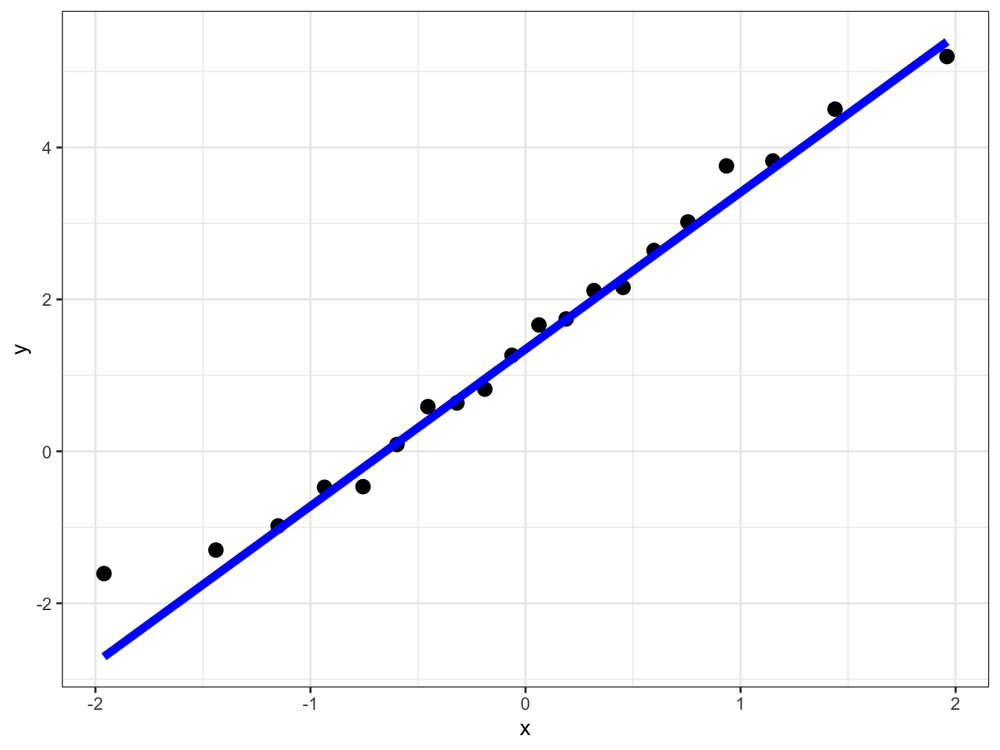
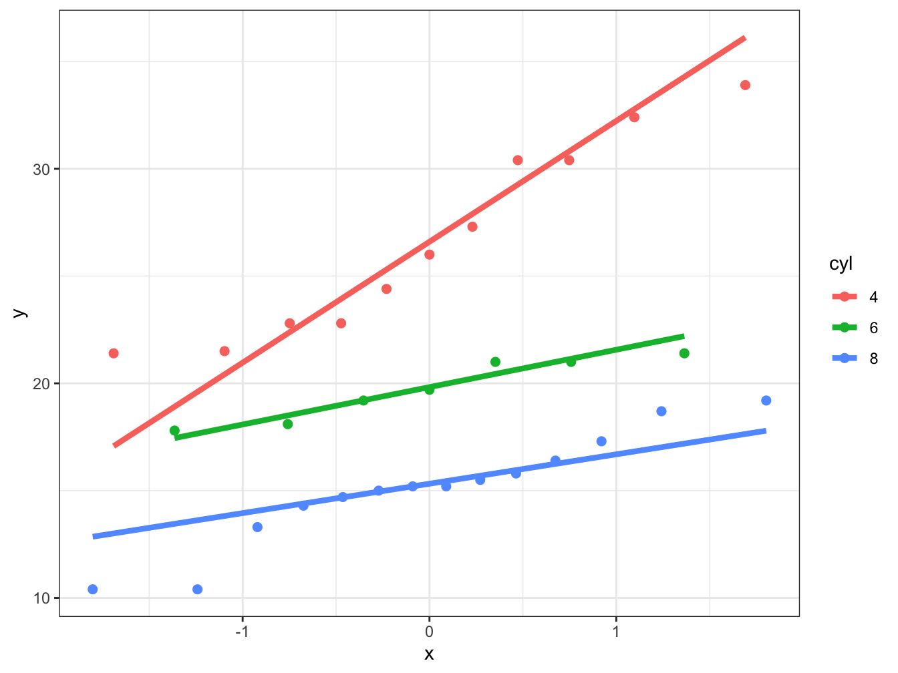

Chapter 13 Plotting
Everything above was just to gain an understanding of what goes into a QQ plot. Of course you would not go through this whole process every time you want to create such a plot. Instead you would use inbuilt functions in R.
Let’s first recreate the plots based on the above data to check it’s working and ensure we have performed the correct steps. We will use both base R plots and ggplot
First we use ggplot and you will note that instead of providing the x or y aesthetics we provide the the sample aesthetics. As usual to learn more about this use ?stat_qq and ?stat_qq_line to learn more about these.
# ggplot providing the data.frame variable and the sample
ggplot(data = qq_df, aes(sample = x_sort)) +
# creating the points in the sample
stat_qq(size = 3) +
# Create the line for comparison
stat_qq_line(size = 2, col = "blue") +
# Choosing a simpler theme
theme_bw()
You can also use base R to create these plots using the functions qqnorm and qqline. Check the help functions for these before making use of them.
# Create a plot of sample quantiles and theoretical quantiles
qqnorm(x_sort, frame = FALSE)
# Create the reference line for comparison in blue linewidth = 2
qqline(x_sort, col = "blue", lwd = 2)
We can see that all plots we have created above yield the same results. Both work but ggplot has more versatility. Let us look at that using the mtcars data.
This dataset contains a variety of information about cars. We will specifically make use of the miles per gallon (mpg) and the number of cylinders (cyl). One data structure we will make use of here is factors. (See here for brief description and some exercies on factors.)
# convert the cyl varibale in the data into factors
mtcars$cyl <- as.factor(mtcars$cyl)
# Look at the top 6 rows of the data.frame
head(mtcars)#> mpg cyl disp hp drat wt qsec vs am
#> Mazda RX4 21.0 6 160 110 3.90 2.620 16.46 0 1
#> Mazda RX4 Wag 21.0 6 160 110 3.90 2.875 17.02 0 1
#> Datsun 710 22.8 4 108 93 3.85 2.320 18.61 1 1
#> Hornet 4 Drive 21.4 6 258 110 3.08 3.215 19.44 1 0
#> Hornet Sportabout 18.7 8 360 175 3.15 3.440 17.02 0 0
#> Valiant 18.1 6 225 105 2.76 3.460 20.22 1 0
#> gear carb
#> Mazda RX4 4 4
#> Mazda RX4 Wag 4 4
#> Datsun 710 4 1
#> Hornet 4 Drive 3 1
#> Hornet Sportabout 3 2
#> Valiant 3 1We can now use this slightly changed data.frame to create QQ plots in one go subsetting for the number of cylinders cars have.
# We use as the data the slightly modified mtcars data.frame
# As asthetics we mpg as the sample and we want to colour code for cyclinders
ggplot(data = mtcars, aes(sample = mpg, color = cyl)) +
# We create the points first
stat_qq(size = 2) +
# We now add the reference lines
stat_qq_line(size = 1.5) +
# We choose a theme that is easier to read
theme_bw()
You can see how useful this approach can be be and managed to create a lot of information in a few lines of code.